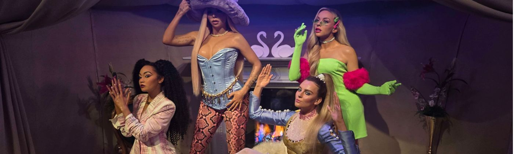

Bibliografía

Libros:
Abrams, J. (2025). The Come Up: Historia Oral del Hip Hop. Liburuak.
Bishop, C. (2013). Radical museology: or, What's 'contemporary' in museums of contemporary art. Walther König, Köln.
Chen, S., Vella, R., Homan, S., & Redhead, T. (2021). Music Export Business. Taylor & Francis Group.
Di Tella, T., Gajardo, P., Gamba, S., Chumbita, H. (1989). Diccionario de ciencias sociales y políticas. Puntosur.
Evans, R. (2015). Music and Power. CreateSpace Independent Publishing Platform.
Foucault, M. (1982). “The Subject and Power." Michel Foucault: Beyond Structuralism and Hermeneutics. 2nd edition. Ed. Hubert L. Dreyfus and Paul Rabinow.
Grimson, A. (2009). “Cultura, identidad, frontera.” Extranjeros en la tecnología y la cultura. Ariel.
Grimson, A. (2011). Los límites de la cultura. Siglo veintiuno.
Hill, M. (1986). “Alan Freed.” The first annual Rock and Roll Hall of Fame Foundation, Inc. induction dinner, ed. Rock and Roll Hall of Fame Foundation.
Palmer, R. (1980). "Rock Begins." The Rolling Stone Illustrated History of Rock and Roll, ed. J. Miller, 165-82. Random House.
Randall, A. (2004). Music, Power, and Politics. Routledge.
Schreiber, B. (2019). Music Is Power: Popular Songs, Social Justice, and the Will to Change. Rutgers University Press.
Tschmuck, P. (2017). Economics of Music. Agenda Publishing.
Weber, C. M., Zhen, Y., & Arias, J. (2023). Artists and Markets in Music. Routledge.
Artículos:
AFM Redaktion. (2024). K-Pop Is Making Billions for South Korea. Asian Fund Managers. https://asiafundmanagers.com/kpop-and-economic-impact-on-south-korea/
Allen, B. (2025). Pollstar 2025 Year End Business Analysis—A Return To Earth: Grosses & Ticket Sales Drop, Averages Increase; Beyoncé, Oasis, Coldplay Top Tours; Venues: Stadiums Rock! Pollstar. https://news.pollstar.com/2025/12/23/year-end-business-analysis-a-return-to-earth-2025-grosses-ticket-sales-drop-averages-increase-beyonce-oasis-coldplay-have-top-tours-venues-stadiums-rock/
Ávila-Fuenmayor, F. (2006). "El concepto de poder en Michel Foucault". Redalyc.org. http://www.redalyc.org/articulo.oa?id=99318557005
Armstrong, E.G. (2001). Gangsta Misogyny: A content analysis of the portrayals of violence against women in rap music, 1987-1993. Journal of Criminal Justice and Popular Culture, Murray State University.
Baird, R. (2025). How British Bands Revolutionized Classic Rock in America. 96k Rock. https://96krock.com/2025/06/18/how-british-bands-revolutionized-classic-rock-in-america/
BBC Bitesize. (2020). Hip-hop music - GCSE Music Revision. https://www.bbc.co.uk/bitesize/guides/znpqcqt/revision/1
BBC Bitesize. (2017). Rock - Popular music styles - National 5 Music Revision. https://www.bbc.co.uk/bitesize/guides/z3q47p3/revision/9
BBC Bitesize. (2025). What is K-pop?. https://www.bbc.co.uk/bitesize/articles/zk8w3qt#zn9d3qt
Beaumont-Thomas, B. (2025). British music industry adds record £8bn to UK economy, according to UK Music. The Guardian. https://www.theguardian.com/music/2025/nov/12/british-music-industry-adds-record-8bn-to-uk-economy-according-to-uk-music
Billboard Korea. (2025). NewJeans’ ‘I Feel Coke’ Campaign With Billboard Korea: Combining Retro Sensibility & Modern Aesthetics. Billboard. https://www.billboard.com/photos/newjeans-i-feel-coke-billboard-korea-1235934258/1-hyein-newjeans-njz-coca-cola-ad-bb-korea-2025-billboard-1240/
Boisvert, L. (2025). The Blind Spot Years of Rock and Roll Between Elvis and the British Invasion. American Songwriter. https://americansongwriter.com/the-blind-spot-years-of-rock-and-roll-between-elvis-and-the-british-invasion/
Brandle, L. (2024). ‘Live Forever’: Oasis’ Career By the Numbers. Billboard. https://www.billboard.com/music/chart-beat/live-forever-oasis-career-charts-1235761746/
Cabalquinto, J.A. (2020). Effect of Hip Hop on Youth Consumerism. Pepperdine Journal of Communication Research. https://digitalcommons.pepperdine.edu/cgi/viewcontent.cgi?article=1116&context=pjcr
Cabrelles Sagredo, M. S. (2016). El jazz, un género musical innovador. Revista de Folklore. https://www.cervantesvirtual.com/obra-visor/el-jazz-un-genero-musical-innovador-784387/html/
Carosso, RR. (2011). Rock ‘n’ Roll, the British Invasion and periodising musical, social and cultural trends, 1954 -1964. https://www.jfki.fu-berlin.de/academics/SummerSchool/Dateien2011/Papers/carosso_page.pdf
Chan, A. (2025). BLACKPINK’s History-Making Accomplishments: A Timeline. Billboard. https://www.billboard.com/lists/blackpink-timeline-history-making-accomplishments/
Choi, H.-j. (2021). BTS Meal drives McDonald's 40% increase in Q2 sales. Hankyoreh. https://english.hani.co.kr/arti/english_edition/e_entertainment/1005921.html
Choi, Q. (2020). 아이돌 세대론 : ① 2020 아이돌팝 세대론. Idology. https://idology.kr/13070
Choi, S-h. (2025). Exports of K-Food Plus in the first half of 2025: USD 6.67 billion, up by 7.1% year over year Press release. Ministry of Agriculture, Food and Rural Affairs.
Colón, S. (2025). K-pop, popular music. Encyclopedia Britannica. https://www.britannica.com/art/K-pop
Daw, S. (2025). How ‘KPop Demon Hunters’ Changed the Game For Netflix. Billboard. https://www.billboard.com/culture/tv-film/kpop-demon-hunters-soundtrack-netflix-impact-1236133661/
Diderich, J. (2021). BTS Helps Increase Online Audience for Louis Vuitton Men’s Show. WWD. https://wwd.com/fashion-news/fashion-scoops/feature/bts-helps-increase-online-audience-for-louis-vuitton-mens-show-1234718930/
DuBois Barnett, A. (2024). Commentary: For Black women, the world of hip-hop has always been a minefield of misogyny. Los Angeles Times. https://www.latimes.com/entertainment-arts/music/story/2024-03-27/black-women-in-hip-hop-metoo-diddy-allegations
Fernandes, J. (2022). Brits and Americans’ music taste differs widely – but so do men and women’s. YouGov: Data Analytics & Market Research Services. https://yougov.com/articles/42773-what-are-top-5-favorite-music-genres-us-and-uk
Frammolino, R. & Boucher, G. (2001). Rap Was Eminem's Roots and Road Out of Poverty. Los Angeles Times. https://www.latimes.com/archives/la-xpm-2001-feb-21-mn-28235-story.html
Frith, S. (1999).
Rock - Authenticity, Commercialism, Genres. Encyclopedia Britannica. https://www.britannica.com/art/rock-music/Authenticity-and-commercialism
Gangwar, A. (2023). From Seoul to Stardom: K-Pop’s Economic Symphony. smallcase. https://www.smallcase.com/blog/from-seoul-to-stardom-k-pops-economic-symphony/
Imanuella, M. (2024). Students’ perception of NCT 127 as a cosmetic brand ambassador for Nature Republic through a commercial video. Universidad Católica de Soegijapranata. https://repository.unika.ac.id/35826/
Kaufman, G. (2025). Oasis Announce Five 2025 South American Stadium Shows. Billboard. https://www.billboard.com/music/rock/oasis-add-five-2025-south-american-stadium-shows-reunion-tour-1235821221/
Kim, S., Kim, S., and Wong, A.K.F. (2023). Music-induced Tourism: Korean Pop (K-pop) Music Consumption Values and Their Consequences. Journal of Destination Marketing & Management, Vol. 30, 100824. https://www.pata.org/member-chapter-news-1/beyond-the-charts-how-k-pop-drives-tourism
Laurence, R. (2023). Hip-hop 50: The party that started hip-hop. BBC Culture. https://www.bbc.com/culture/article/20130809-the-party-where-hip-hop-was-born
Lee, J. Y. (2025). KPop Demon Hunters: How the Netflix film became a global sensation. BBC. https://www.bbc.com/culture/article/20250715-the-animated-k-pop-film-that-swept-the-world
MarkWide Research. (2026). North America K-pop Events Market – Size, Share, Trends, Analysis & Forecast 2026–2035. MarkWide Research. https://markwideresearch.com/north-america-k-pop-events-market/
McAlpine, F. (2018). The unexpected origins of music's most well-used terms. BBC Music. https://www.bbc.co.uk/music/articles/dc64e24d-c4e7-4e34-b2f7-e34a00ea16ad
Momenyan, D. (2026). TWICE's Victoria's Secret PINK Valentine's Day Campaign Unveils New Bra. Teen Vogue. https://www.teenvogue.com/story/twice-victorias-secret-pink-valentines-campaign-new-bra-style-see-photos
Moon, J.-y. (2026). Park's 'No Other Choice' Projected as Second in U.S. Korean Film Box Office. The Chosun Daily. https://www.chosun.com/english/world-en/2026/01/17/SXRLLNFJS5G6DEIYMPAOSSCQSI/
Paine, A. (2025). Music tourists in UK spent record £10 billion in 2024. Music Week. https://www.musicweek.com/live/read/music-tourists-in-uk-spent-record-10-billion-in-2024/092215
Pizarro, C. (2006). Tras las huellas de la identidad en los relatos locales sobre el pasado. Cuadernos de antropología social. https://www.scielo.org.ar/scielo.php?script=sci_arttext&pid=S1850-275X2006000200006
PQ, R. (2023). Hip Hop History: From the Streets to the Mainstream. Icon Collective. https://www.iconcollective.edu/hip-hop-history
Puterbaugh, P. (1988). The British Invasion: From the Beatles to the Stones, The Sixties Belonged to Britain. Rolling Stone. https://www.rollingstone.com/feature/the-british-invasion-from-the-beatles-to-the-stones-the-sixties-belonged-to-britain-244870/
Sánchez Azcona, J. (1963). Conceptos fundamentales de Max Weber. Revista Mexicana De Ciencias Políticas Y Sociales, 9(34).
Shoard, C. (2020). Parasite makes Oscars history as first foreign language winner of best picture. The Guardian. https://www.theguardian.com/film/2020/feb/10/parasite-first-foreign-language-film-to-win-best-picture-oscar
Spanos, B. (2025). The Secret Behind the Success of 'KPop Demon Hunters'? It's Controversy-Free. Rolling Stone. https://www.rollingstone.com/music/music-features/kpop-demon-hunters-success-netflix-why-1235448146/
Stoll, J. (2025). Music industry in South Korea. Statista. https://www.statista.com/topics/5098/music-industry-in-south-korea/
Sun-hwa, D. (2021). Number of hallyu fans around the world surpasses 100 million. The Korea Times. https://www.koreatimes.co.kr/lifestyle/trends/20210114/number-of-hallyu-fans-around-the-world-surpasses-100-million
Tate, G. (2025). Hip-hop, musical and cultural movement. Encyclopedia Britannica. https://www.britannica.com/art/hip-hop
Tewari, S. (2026). K-beauty: From social media trend to economic powerhouse. BBC. https://www.bbc.com/news/articles/cj9y43mv332o
The Economist. (2023). Hip-hop’s future will be less American and more global. Culture. https://www.economist.com/culture/2023/08/10/hip-hops-future-will-be-less-american-and-more-global
Toyryla, L. (2025). Hallyu – Everything you need to know about the Korean Wave. 90 Day Korean. https://www.90daykorean.com/hallyu/
Vasagar, J. (2007). Hendrix to Oasis tourist trail: putting England's rock locations on the map. The Guardian. https://www.theguardian.com/uk/2007/feb/05/topstories3.musicnews
Widjojo, C. (2022). A Closer Look at Blackpink’s High-profile Brand Ambassadorships. WWD. https://wwd.com/fashion-news/fashion-scoops/blackpink-lisa-jennie-rose-jisoo-ambassadorships-deals-1235238642/
Yoo, N. (2020). Seo Taiji and Boys: Seo Taiji and Boys. Pitchfork. https://pitchfork.com/reviews/albums/seo-taiji-and-boys-seo-taiji-and-boys/
Diccionarios
Cambridge Dictionary. (s.f.). Hip-hop. En el diccionario Dictionary.Cambridge.org. Consultado el 15 de diciembre de 2025 en https://dictionary.cambridge.org/dictionary/english/hip-hop
Oxford Dictionary. (s.f.). K-pop. En el diccionario OED.com. Consultado el 26 de diciembre de 2025 en https://www.oed.com/dictionary/k-pop_n?tl=true